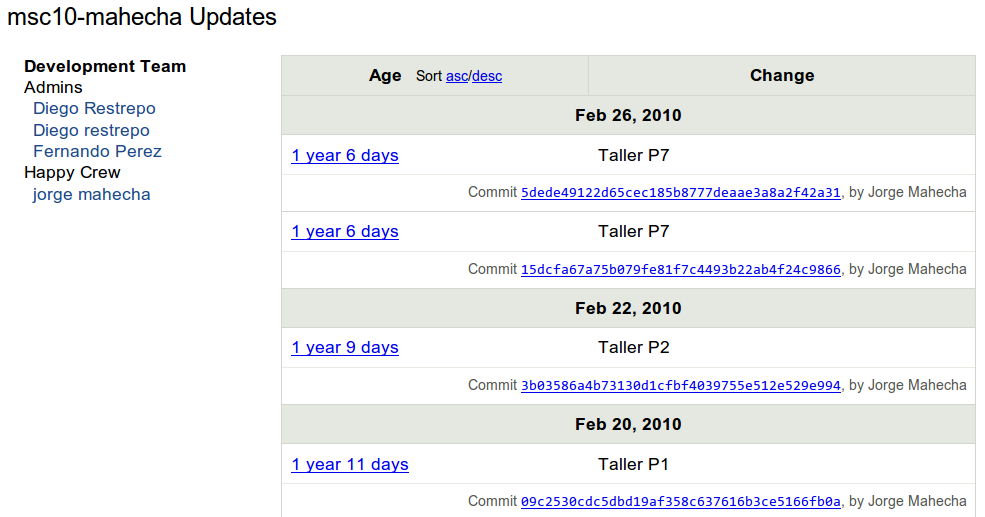

An interactive Git Tutorial: the tool you didn’t know you needed
Contents
An interactive Git Tutorial: the tool you didn’t know you needed¶
From personal workflows to open collaboration¶
Note: this tutorial was particularly modeled, and therefore owes a lot, to the excellent materials offered in:
“Git for Scientists: A Tutorial” by John McDonnell (no link as this tutorial seems to have disappeared from the internet).
Emanuele Olivetti’s lecture notes and exercises from the G-Node summer school on Advanced Scientific Programming in Python.
In particular I’ve reused the excellent images from the Pro Git book that John had already selected and downloaded, as well as some of his outline. But this version of the tutorial aims to be 100% reproducible by being executed directly as an IPython notebook and is hosted itself on github so that others can more easily make improvements to it by collaborating on Github. Many thanks to John and Emanuele for making their materials available online.
After writing this document, I discovered J.R. Johansson’s tutorial on version control that is also written as a fully reproducible notebook and is also aimed at a scientific audience. It has a similar spirit to this one, and is part of his excellent series Lectures on Scientific Computing with Python that is entirely available as Jupyter Notebooks.
Wikipedia¶
“Revision control, also known as version control, source control or software configuration management (SCM), is the management of changes to documents, programs, and other information stored as computer files.”
Reproducibility?
Tracking and recreating every step of your work
In the software world: it’s called Version Control!
What do (good) version control tools give you?
Peace of mind (backups)
Freedom (exploratory branching)
Collaboration (synchronization)
Git is an enabling technology: Use version control for everything¶
Paper writing (never get
paper_v5_john_jane_final_oct22_really_final.texby email again!)Grant writing
Everyday research
Teaching (never accept an emailed homework assignment again!)
Teaching courses with Git¶

Annotated history of each student’s worfklow (and backup!)¶

The plan for this tutorial¶
This tutorial is structured in the following way: we will begin with a brief overview of key concepts you need to understand in order for git to really make sense. We will then dive into hands-on work: after a brief interlude into necessary configuration we will discuss 5 “stages of git” with scenarios of increasing sophistication and complexity, introducing the necessary commands for each stage:
Local, single-user, linear workflow
Single local user, branching
Using remotes as a single user
Remotes for collaborating in a small team
Full-contact github: distributed collaboration with large teams
In reality, this tutorial only covers stages 1-4, since for #5 there are many software develoment-oriented tutorials and documents of very high quality online. But most scientists start working alone with a few files or with a small team, so I feel it’s important to build first the key concepts and practices based on problems scientists encounter in their everyday life and without the jargon of the software world. Once you’ve become familiar with 1-4, the excellent tutorials that exist about collaborating on github on open-source projects should make sense.
Very high level picture: an overview of key concepts¶
The commit: a snapshot of work at a point in time

Credit: ProGit book, by Scott Chacon, CC License.
A repository: a group of linked commits

Note: these form a Directed Acyclic Graph (DAG), with nodes identified by their hash.
A hash: a fingerprint of the content of each commit and its parent
from hashlib import sha1
# Our first commit
data1 = b'This is the start of my paper.'
meta1 = b'date: 1/1/17'
hash1 = sha1(data1 + meta1).hexdigest( )
print('Hash:', hash1)
Hash: 3b32905baabd5ff22b3832c892078f78f5e5bd3b
# Our second commit, linked to the first
data2 = b'Some more text in my paper...'
meta2 = b'date: 1/2/1'
# Note we add the parent hash here!
hash2 = sha1(data2 + meta2 + hash1.encode()).hexdigest()
print('Hash:', hash2)
Hash: 1c12d2aad51d5fc33e5b83a03b8787dfadde92a4
And this is pretty much the essence of Git!
First things first: git must be configured before first use¶
The minimal amount of configuration for git to work without pestering you is to tell it who you are. You should run a version of these commands in your shell:
git config --global user.name "Fernando Perez"
git config --global user.email "Fernando.Perez@berkeley.edu"
And while we’re at it, we also turn on the use of color, which is very useful
git config --global color.ui "auto"
Convenient credentials management¶
Next, we configure git so that we manage our credentials without having to manually type our passwords for each and every operation.
For general users, Github offers in its help pages instructions on how to configure the credentials helper for Mac OSX, Windows and Linux.
But in this document we will focus on configuring the github app for JupyterHub developed by Berkeley’s Yuvi Panda. Our JupyterHub already has this app pre-installed, which makes it very convenient to push and pull securely from selected repositories.
You will need to run this command, which adds the credentials information to the file ~/.gitconfig.local, which we load from ~/.gitconfig to store local information that may be different across systems (since we’ll be managing the global ~/.gitconfig file through a fairly generic public git repository):
git config -f $HOME/.gitconfig.local credential.helper "store --file=/tmp/github-app-git-credentials"
And then, follow these steps, which you’ll need to do again each time you log into the Hub and want to push/pull to/from GitHub:
Go to the Stat159 GitHub Auth App page and add this app to your account. For now you can give it access to all your repos, or if you prefer, you can manually configure which repos you’ll be using (this will require a bit more manual maintenance through the semester).
Open a terminal, and type
github-app-user-auth.It should give you a link to go to, and a code to input into the web page when that link is opened. Open the link, enter the code there.
Grant access to the device in the web page, and you’re done!
Authentication is valid for 8 hours, and once it expires, this process will need to be repeated, except for the first step. In the future, we might have a web app or other process to make this less painful. However, keeping the length of this session limited drastically helps with security too.
Later, you can see what repositories you’ve given it access to by visiting your GitHub installations page.
Stage 1: Local, single-user, linear workflow¶
Type git to see a full list of all the ‘core’ commands. We’ll now go through most of these via small practical exercises:
!git
usage: git [--version] [--help] [-C <path>] [-c <name>=<value>]
[--exec-path[=<path>]] [--html-path] [--man-path] [--info-path]
[-p | --paginate | -P | --no-pager] [--no-replace-objects] [--bare]
[--git-dir=<path>] [--work-tree=<path>] [--namespace=<name>]
[--super-prefix=<path>] [--config-env=<name>=<envvar>]
<command> [<args>]
These are common Git commands used in various situations:
start a working area (see also: git help tutorial)
clone Clone a repository into a new directory
init Create an empty Git repository or reinitialize an existing one
work on the current change (see also: git help everyday)
add Add file contents to the index
mv Move or rename a file, a directory, or a symlink
restore Restore working tree files
rm Remove files from the working tree and from the index
examine the history and state (see also: git help revisions)
bisect Use binary search to find the commit that introduced a bug
diff Show changes between commits, commit and working tree, etc
grep Print lines matching a pattern
log Show commit logs
show Show various types of objects
status Show the working tree status
grow, mark and tweak your common history
branch List, create, or delete branches
commit Record changes to the repository
merge Join two or more development histories together
rebase Reapply commits on top of another base tip
reset Reset current HEAD to the specified state
switch Switch branches
tag Create, list, delete or verify a tag object signed with GPG
collaborate (see also: git help workflows)
fetch Download objects and refs from another repository
pull Fetch from and integrate with another repository or a local branch
push Update remote refs along with associated objects
'git help -a' and 'git help -g' list available subcommands and some
concept guides. See 'git help <command>' or 'git help <concept>'
to read about a specific subcommand or concept.
See 'git help git' for an overview of the system.
git init: create an empty repository¶
%pwd
'/Users/fperez/teach/stat159/2022sp/site/lectures/intro-git'
%%bash
rm -rf test
git init test
Initialized empty Git repository in /Users/fperez/teach/stat159/2022sp/site/lectures/intro-git/test/.git/
Note: all these cells below are meant to be run by you in a terminal where you change once to the test directory and continue working there.
Since we are putting all of them here in a single notebook for the purposes of the tutorial, they will all be prepended with the first two lines:
%%bash
cd test
that tell IPython to do that each time. But you should ignore those two lines and type the rest of each cell yourself in your terminal.
Let’s look at what git did:
%%bash
cd test
ls
%%bash
cd test
ls -la
total 0
drwxr-xr-x 3 fperez wavelet 96 Jan 25 23:50 .
drwxr-xr-x 6 fperez wavelet 192 Jan 25 23:50 ..
drwxr-xr-x 9 fperez wavelet 288 Jan 25 23:50 .git
%%bash
cd test
ls -l .git
total 24
-rw-r--r-- 1 fperez wavelet 21 Jan 25 23:50 HEAD
-rw-r--r-- 1 fperez wavelet 137 Jan 25 23:50 config
-rw-r--r-- 1 fperez wavelet 73 Jan 25 23:50 description
drwxr-xr-x 15 fperez wavelet 480 Jan 25 23:50 hooks
drwxr-xr-x 3 fperez wavelet 96 Jan 25 23:50 info
drwxr-xr-x 4 fperez wavelet 128 Jan 25 23:50 objects
drwxr-xr-x 4 fperez wavelet 128 Jan 25 23:50 refs
Now let’s edit our first file in the test directory with a text editor… I’m doing it programatically here for automation purposes, but you’d normally be editing by hand
%%bash
cd test
echo "My first bit of text" > file1.txt
git add: tell git about this new file¶
%%bash
cd test
git add file1.txt
We can now ask git about what happened with status:
%%bash
cd test
git status
On branch main
No commits yet
Changes to be committed:
(use "git rm --cached <file>..." to unstage)
new file: file1.txt
git commit: permanently record our changes in git’s database¶
For now, we are always going to call git commit either with the -a option or with specific filenames (git commit file1 file2...). This delays the discussion of an aspect of git called the index (often referred to also as the ‘staging area’) that we will cover later. Most everyday work in regular scientific practice doesn’t require understanding the extra moving parts that the index involves, so on a first round we’ll bypass it. Later on we will discuss how to use it to achieve more fine-grained control of what and how git records our actions.
%%bash
cd test
git commit -a -m"This is our first commit"
[main (root-commit) a3ee476] This is our first commit
1 file changed, 1 insertion(+)
create mode 100644 file1.txt
In the commit above, we used the -m flag to specify a message at the command line. If we don’t do that, git will open the editor we specified in our configuration above and require that we enter a message. By default, git refuses to record changes that don’t have a message to go along with them (though you can obviously ‘cheat’ by using an empty or meaningless string: git only tries to facilitate best practices, it’s not your nanny).
git log: what has been committed so far¶
%%bash
cd test
git log
commit a3ee47693d62d3be0e10cf25e2df2274263c32b8
Author: Fernando Pérez <fernando.perez@berkeley.edu>
Date: Tue Jan 25 23:50:14 2022 -0800
This is our first commit
git diff: what have I changed?¶
Let’s do a little bit more work… Again, in practice you’ll be editing the files by hand, here we do it via shell commands for the sake of automation (and therefore the reproducibility of this tutorial!)
%%bash
cd test
echo "And now some more text..." >> file1.txt
And now we can ask git what is different:
%%bash
cd test
git diff
diff --git a/file1.txt b/file1.txt
index ce645c7..4baa979 100644
--- a/file1.txt
+++ b/file1.txt
@@ -1 +1,2 @@
My first bit of text
+And now some more text...
The format of the output above is well explained in detail in this Stack Overflow post. But we can provide a brief summary here:
diff --git a/file1.txt b/file1.txt
This tells us which files changed overall, with ‘a’ representing the old path and ‘b’ the new one (in this case it’s the same file, though if a file had been renamed it would be different).
index ce645c7..4baa979 100644
These are hashes of the file at the two stages, needed by git itself for other operations with the diff output.
The next block shows the actual changes. The first two lines show which paths are being compared (in this case the same file, file1.txt):
--- a/file1.txt
+++ b/file1.txt
The next line indicates where the changes happened. The format is @@ from-file-range to-file-range @@, where there’s one more @ character than there’s parents to the file comparison (git can handle multi-way diff/merges), adn the file range format is -/+<start line>,<# of lines>, with - for the from-file and + for the to-file:
@@ -1 +1,2 @@
Lines prepended with - correspond to deletions (none in this case), and lines with + to additions. A few lines around deletions/additions are shown for context:
My first bit of text
+And now some more text...
The cycle of git virtue: work, commit, work, commit, …¶
%%bash
cd test
git commit -a -m"I have made great progress on this critical matter."
[main 963d786] I have made great progress on this critical matter.
1 file changed, 1 insertion(+)
git log revisited¶
First, let’s see what the log shows us now:
%%bash
cd test
git log
commit 963d78694d2b4e10d8b2fea40181760314186e21
Author: Fernando Pérez <fernando.perez@berkeley.edu>
Date: Tue Jan 25 23:50:23 2022 -0800
I have made great progress on this critical matter.
commit a3ee47693d62d3be0e10cf25e2df2274263c32b8
Author: Fernando Pérez <fernando.perez@berkeley.edu>
Date: Tue Jan 25 23:50:14 2022 -0800
This is our first commit
Sometimes it’s handy to see a very summarized version of the log:
%%bash
cd test
git log --oneline --topo-order --graph
* 963d786 I have made great progress on this critical matter.
* a3ee476 This is our first commit
Git supports aliases: new names given to command combinations. Let’s make this handy shortlog an alias, so we only have to type git slog and see this compact log:
%%bash
cd test
# We create our alias (this saves it in git's permanent configuration file):
git config --global alias.slog "log --oneline --topo-order --graph"
# And now we can use it
git slog
* 963d786 I have made great progress on this critical matter.
* a3ee476 This is our first commit
git mv and rm: moving and removing files¶
While git add is used to add fils to the list git tracks, we must also tell it if we want their names to change or for it to stop tracking them. In familiar Unix fashion, the mv and rm git commands do precisely this:
%%bash
cd test
git mv file1.txt file-newname.txt
git status
On branch main
Changes to be committed:
(use "git restore --staged <file>..." to unstage)
renamed: file1.txt -> file-newname.txt
Note that these changes must be committed too, to become permanent! In git’s world, until something hasn’t been committed, it isn’t permanently recorded anywhere.
%%bash
cd test
git commit -a -m"I like this new name better"
echo "Let's look at the log again:"
git slog
[main ae5580b] I like this new name better
1 file changed, 0 insertions(+), 0 deletions(-)
rename file1.txt => file-newname.txt (100%)
Let's look at the log again:
* ae5580b I like this new name better
* 963d786 I have made great progress on this critical matter.
* a3ee476 This is our first commit
And git rm works in a similar fashion.
Exercise¶
Add a new file file2.txt, commit it, make some changes to it, commit them again, and then remove it (and don’t forget to commit this last step!).
Local user, branching¶
What is a branch? Simply a label for the ‘current’ commit in a sequence of ongoing commits:

There can be multiple branches alive at any point in time; the working directory is the state of a special pointer called HEAD. In this example there are two branches, master and testing, and testing is the currently active branch since it’s what HEAD points to:

Once new commits are made on a branch, HEAD and the branch label move with the new commits:

This allows the history of both branches to diverge:

But based on this graph structure, git can compute the necessary information to merge the divergent branches back and continue with a unified line of development:

Let’s now illustrate all of this with a concrete example. Let’s get our bearings first:
%%bash
cd test
git status
ls
On branch main
nothing to commit, working tree clean
file-newname.txt
We are now going to try two different routes of development: on the master branch we will add one file and on the experiment branch, which we will create, we will add a different one. We will then merge the experimental branch into master.
%%bash
cd test
git switch -c experiment
Switched to a new branch 'experiment'
%%bash
cd test
echo "Some crazy idea" > experiment.txt
git add experiment.txt
git commit -a -m"Trying something new"
git slog
[experiment b71b77a] Trying something new
1 file changed, 1 insertion(+)
create mode 100644 experiment.txt
* b71b77a Trying something new
* ae5580b I like this new name better
* 963d786 I have made great progress on this critical matter.
* a3ee476 This is our first commit
%%bash
cd test
git switch main
git slog
Switched to branch 'main'
* ae5580b I like this new name better
* 963d786 I have made great progress on this critical matter.
* a3ee476 This is our first commit
%%bash
cd test
echo "All the while, more work goes on in master..." >> file-newname.txt
git commit -a -m"The mainline keeps moving"
git slog
[main eddded5] The mainline keeps moving
1 file changed, 1 insertion(+)
* eddded5 The mainline keeps moving
* ae5580b I like this new name better
* 963d786 I have made great progress on this critical matter.
* a3ee476 This is our first commit
By default, all variations of the git log commands only show the currently active branch. If we want to see all branches, we can ask for them with the --all flag:
%%bash
cd test
git slog --all
* eddded5 The mainline keeps moving
| * b71b77a Trying something new
|/
* ae5580b I like this new name better
* 963d786 I have made great progress on this critical matter.
* a3ee476 This is our first commit
Above, we can see the commit whose message is Try something new, that comes from the experiment branch.
%%bash
cd test
ls
file-newname.txt
%%bash
cd test
git merge experiment
git slog
Merge made by the 'ort' strategy.
experiment.txt | 1 +
1 file changed, 1 insertion(+)
create mode 100644 experiment.txt
* e752aa4 Merge branch 'experiment'
|\
| * b71b77a Trying something new
* | eddded5 The mainline keeps moving
|/
* ae5580b I like this new name better
* 963d786 I have made great progress on this critical matter.
* a3ee476 This is our first commit
Using remotes as a single user¶
We are now going to introduce the concept of a remote repository: a pointer to another copy of the repository that lives on a different location. This can be simply a different path on the filesystem or a server on the internet.
For this discussion, we’ll be using remotes hosted on the GitHub.com service, but you can equally use other services like BitBucket or Gitorious as well as host your own.
%%bash
cd test
ls
echo "Let's see if we have any remote repositories here:"
git remote -v
experiment.txt
file-newname.txt
Let's see if we have any remote repositories here:
Since the above cell didn’t produce any output after the git remote -v call, it means we have no remote repositories configured. We will now proceed to do so. Once logged into GitHub, go to the new repository page and make a repository called test. Do not check the box that says Initialize this repository with a README, since we already have an existing repository here. That option is useful when you’re starting first at Github and don’t have a repo made already on a local computer.
We can now follow the instructions from the next page:
%%bash
cd test
git remote add origin https://github.com/fperez/test.git
git branch -M main
git push -u origin main
error: remote origin already exists.
To https://github.com/fperez/test.git
* [new branch] main -> main
branch 'main' set up to track 'origin/main'.
Let’s see the remote situation again:
%%bash
cd test
git remote -v
origin https://github.com/fperez/test.git (fetch)
origin https://github.com/fperez/test.git (push)
We can now see this repository publicly on github.
Let’s see how this can be useful for backup and syncing work between two different computers. I’ll simulate a 2nd computer by working in a different directory…
%%bash
# Here I clone my 'test' repo but with a different name, test2, to simulate a 2nd computer
git clone https://github.com/fperez/test.git test2
cd test2
pwd
git remote -v
Cloning into 'test2'...
/Users/fperez/teach/stat159/2022sp/site/lectures/intro-git/test2
origin https://github.com/fperez/test.git (fetch)
origin https://github.com/fperez/test.git (push)
Let’s now make some changes in one ‘computer’ and synchronize them on the second.
%%bash
cd test2 # working on computer #2
echo "More new content on my experiment" >> experiment.txt
git commit -a -m"More work, on machine #2"
[main 2320847] More work, on machine #2
1 file changed, 1 insertion(+)
Now we put this new work up on the github server so it’s available from the internet
%%bash
cd test2
git push
To https://github.com/fperez/test.git
e752aa4..2320847 main -> main
Now let’s fetch that work from machine #1:
%%bash
cd test
git pull
From https://github.com/fperez/test
e752aa4..2320847 main -> origin/main
Updating e752aa4..2320847
Fast-forward
experiment.txt | 1 +
1 file changed, 1 insertion(+)
An important aside: conflict management¶
While git is very good at merging, if two different branches modify the same file in the same location, it simply can’t decide which change should prevail. At that point, human intervention is necessary to make the decision. Git will help you by marking the location in the file that has a problem, but it’s up to you to resolve the conflict. Let’s see how that works by intentionally creating a conflict.
We start by creating a branch and making a change to our experiment file:
%%bash
cd test
git switch -c trouble
echo "This is going to be a problem..." >> experiment.txt
git commit -a -m"Changes in the trouble branch"
[trouble c480fb4] Changes in the trouble branch
1 file changed, 1 insertion(+)
Switched to branch 'trouble'
And now we go back to the master branch, where we change the same file:
%%bash
cd test
git switch main
echo "More work on the master branch..." >> experiment.txt
git commit -a -m"Mainline work"
Your branch is up-to-date with 'origin/master'.
[master a8694ad] Mainline work
1 file changed, 1 insertion(+)
Switched to branch 'master'
So now let’s see what happens if we try to merge the trouble branch into master:
%%bash
cd test
git merge trouble
Auto-merging experiment.txt
CONFLICT (content): Merge conflict in experiment.txt
Automatic merge failed; fix conflicts and then commit the result.
Let’s see what git has put into our file:
%%bash
cd test
cat experiment.txt
Some crazy idea
More new content on my experiment
<<<<<<< HEAD
More work on the master branch...
=======
This is going to be a problem...
>>>>>>> trouble
At this point, we go into the file with a text editor, decide which changes to keep, and make a new commit that records our decision. I’ve now made the edits, in this case I decided that both pieces of text were useful, but integrated them with some changes:
%%bash
cd test
cat experiment.txt
Some crazy idea
More new content on my experiment
More work on the master branch...
This is going to be a problem...
Let’s then make our new commit:
%%bash
cd test
git commit -a -m"Completed merge of trouble, fixing conflicts along the way"
git slog
[master 28e0c56] Completed merge of trouble, fixing conflicts along the way
* 28e0c56 Completed merge of trouble, fixing conflicts along the way
|\
| * c480fb4 Changes in the trouble branch
* | a8694ad Mainline work
|/
* 94c7438 More work, on machine #2
* 27b0ec9 Merge branch 'experiment'
|\
| * 2cba531 Trying something new
* | ff8b2ec The mainline keeps moving
|/
* 005d8e2 I like this new name better
* e819b08 I have made great progress on this critical matter.
* 1f299f3 This is our first commit
Note: While it’s a good idea to understand the basics of fixing merge conflicts by hand, in some cases you may find the use of an automated tool useful. Git supports multiple merge tools: a merge tool is a piece of software that conforms to a basic interface and knows how to merge two files into a new one. Since these are typically graphical tools, there are various to choose from for the different operating systems, and as long as they obey a basic command structure, git can work with any of them.
Collaborating on github with a small team¶
Single remote with shared access: we are going to set up a shared collaboration with one partner (the person sitting next to you). This will show the basic workflow of collaborating on a project with a small team where everyone has write privileges to the same repository.
Note for SVN users: this is similar to the classic SVN workflow, with the distinction that commit and push are separate steps. SVN, having no local repository, commits directly to the shared central resource, so to a first approximation you can think of svn commit as being synonymous with git commit; git push.
We will have two people, let’s call them Alice and Bob, sharing a repository. Alice will be the owner of the repo and she will give Bob write privileges.
We begin with a simple synchronization example, much like we just did above, but now between two people instead of one person. Otherwise it’s the same:
Bob clones Alice’s repository.
Bob makes changes to a file and commits them locally.
Bob pushes his changes to github.
Alice pulls Bob’s changes into her own repository.
Next, we will have both parties make non-conflicting changes each, and commit them locally. Then both try to push their changes:
Alice adds a new file,
alice.txtto the repo and commits.Bob adds
bob.txtand commits.Alice pushes to github.
Bob tries to push to github. What happens here?
The problem is that Bob’s changes create a commit that conflicts with Alice’s, so git refuses to apply them. It forces Bob to first do the merge on his machine, so that if there is a conflict in the merge, Bob deals with the conflict manually (git could try to do the merge on the server, but in that case if there’s a conflict, the server repo would be left in a conflicted state without a human to fix things up). The solution is for Bob to first pull the changes (pull in git is really fetch+merge), and then push again.
Full-contact github: distributed collaboration with large teams¶
Multiple remotes and merging based on pull request workflow: this is beyond the scope of this brief tutorial, so we’ll simply discuss how it works very briefly, illustrating it with the activity on the IPython github repository.
Git resources¶
Introductory materials¶
There are lots of good tutorials and introductions for Git, which you can easily find yourself; this is just a short list of things I’ve found useful. For a beginner, I would recommend the following ‘core’ reading list, and below I mention a few extra resources:
The smallest, and in the style of this tuorial: git - the simple guide contains ‘just the basics’. Very quick read.
In my own experience, the most useful resource was Understanding Git Conceptually. Git has a reputation for being hard to use, but I have found that with a clear view of what is actually a very simple internal design, its behavior is remarkably consistent, simple and comprehensible.
For more detail, see the start of the excellent Pro Git book.
You can also try Git in your browser thanks to GitHub’s interactive tutorial.
If you are really impatient and just want a quick start, this visual git tutorial may be sufficient. It is nicely illustrated with diagrams that show what happens on the filesystem.
For windows users, an Illustrated Guide to Git on Windows is useful in that it contains also some information about handling SSH (necessary to interface with git hosted on remote servers when collaborating) as well as screenshots of the Windows interface.
Cheat sheets: a useful summary of common commands in PDF format that can be printed for frequent reference. Another nice PDF one.
Beyond the basics¶
At some point, it will pay off to understand how git itself is built. These two documents, written in a similar spirit, are probably the most useful descriptions of the Git architecture short of diving into the actual implementation. They walk you through how you would go about building a version control system with a little story. By the end you realize that Git’s model is almost an inevitable outcome of the proposed constraints:
The Git parable by Tom Preston-Werner.
Git foundations by Matthew Brett.
Git ready: A great website of posts on specific git-related topics, organized by difficulty.
QGit: an excellent Git GUI.
Git ships by default with gitk and git-gui, a pair of Tk graphical clients to browse a repo and to operate in it. I personally have found qgit to be nicer and easier to use. It is available on modern linux distros, and since it is based on Qt, it should run on OSX and Windows.
Another book-size guide that has useful snippets.
A port of the Hg book’s beginning
The Mercurial book has a reputation for clarity, so Carl Worth decided to port its introductory chapter to Git. It’s a nicely written intro, which is possible in good measure because of how similar the underlying models of Hg and Git ultimately are.
Finally, if you prefer a video presentation, this 1-hour tutorial prepared by the GitHub educational team will walk you through the entire process:
from IPython.display import YouTubeVideo
YouTubeVideo('U8GBXvdmHT4')
A few useful tips for common tasks¶
Better shell support¶
Adding git branch info to your bash prompt and tab completion for git commands and branches is extremely useful. I suggest you at least copy:
You can then source both of these files in your ~/.bashrc and then set your prompt (I’ll assume you named them as the originals but starting with a . at the front of the name):
source $HOME/.git-completion.bash
source $HOME/.git-prompt.sh
PS1='[\u@\h \W$(__git_ps1 " (%s)")]\$ ' # adjust this to your prompt liking
See the comments in both of those files for lots of extra functionality they offer.
Embedding Git information in LaTeX documents¶
(Sent by Yaroslav Halchenko)
I use a Make rule:
# Helper if interested in providing proper version tag within the manuscript
revision.tex: ../misc/revision.tex.in ../.git/index
GITID=$$(git log -1 | grep -e '^commit' -e '^Date:' | sed -e 's/^[^ ]* *//g' | tr '\n' ' '); \
echo $$GITID; \
sed -e "s/GITID/$$GITID/g" $< >| $@
in the top level Makefile.common which is included in all
subdirectories which actually contain papers (hence all those
../.git). The revision.tex.in file is simply:
% Embed GIT ID revision and date
\def\revision{GITID}
The corresponding paper.pdf depends on revision.tex and includes the
line \input{revision} to load up the actual revision mark.
git export¶
Git doesn’t have a native export command, but this works just fine:
git archive --prefix=fperez.org/ master | gzip > ~/tmp/source.tgz